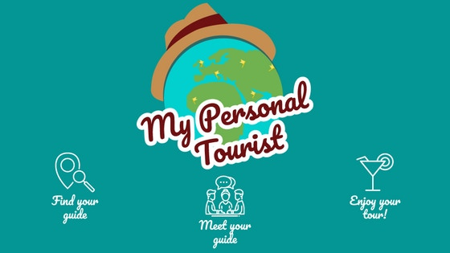

The goal of this app is to turn everyone in a real tour-guide of the places he more likes, proposing a theme tour (i.e.: Tour of the best pizzas, tour of the best aperitifs, and tour of the best landscapes and so on). Every “Personal Tourist Guide” will write a short introduction about himself and about the tour, he will choose the prize, indicating the maximum number of the participants, the duration, the scheduled distance, the excursion typology, the tour place and the spoken languages. What makes this kind of tours unique, are not only the places chosen by the "Personal Tourist Guide", but moreover the important moments of socializations between him and his clients. Our idea is: “Turn a tourist in a citizen of your city”.
